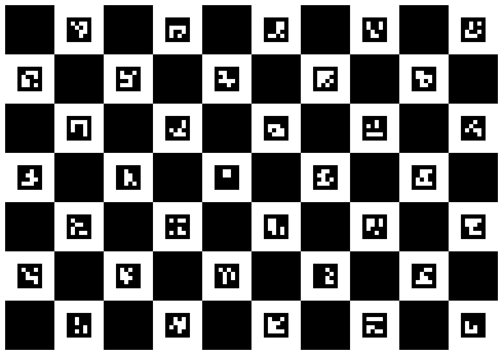
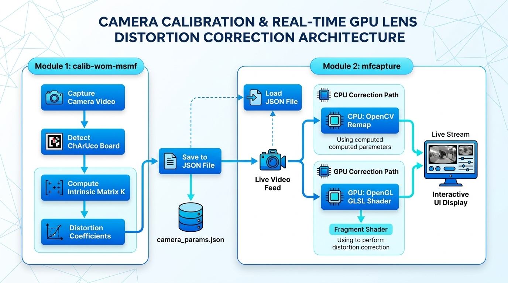

実践カメラキャリブレーション &
レンズ歪み補正 講義ハンドブック
第1章 開発環境とプロジェクト規約
1.1 開発環境要件
本勉強会で使用する開発環境およびツール群は以下の通りです。
- OS: Windows 11 / 10 (64bit / x64)
- IDE: Visual Studio 2022 以降 (`/std:c++17`)
- ツール: PowerShell, Git, CMake 3.13+, Python
1.2 ソースコード文字コード規約
| ファイル種別 | 拡張子 | 文字コード | BOMの有無 | 理由 |
|---|---|---|---|---|
| C++ ソース/ヘッダ | .h, .cpp |
UTF-8 | BOM あり | MSVC (`cl.exe`) で日本語コメントが含まれる場合の文字化け・エラーを防止 |
| GLSL シェーダー | .vert, .frag, .comp |
UTF-8 | BOM なし | OpenGL の GLSL コンパイラ (`glCompileShader`) が BOM プレフィックスを構文エラーとするのを防ぐ |
1.3 外部ライブラリおよびバージョン
- OpenCV 4.13.0: 動画入力、画像処理、ChArUco Board キャリブレーション機能に使用
- GLFW 3.4: ウィンドウ作成、OpenGL コンテキスト管理、入力イベント制御
- Dear ImGui v1.92.8: GUI フロントエンド (GLFW + OpenGL3 バックエンド実装を直接リンク)
- Native File Dialog Extended (nfd): OS 標準のファイル選択ダイアログ
第2章 カメラモデリングとレンズ歪みの数理
2.1 ピンホールカメラモデル・内部パラメータ・外部パラメータ
ピンホールカメラモデルでは、3次元空間の世界座標点 $P_w = (X_w, Y_w, Z_w)^T$ がカメラの光学中心を通り、画像平面上の点 $p = (u, v)^T$ に投影されます。この関係は**透視投影 (Perspective Projection)** 方程式として次のように記述されます。
$$s \begin{bmatrix} u \\ v \\ 1 \end{bmatrix} = K \begin{bmatrix} R & t \end{bmatrix} \begin{bmatrix} X_w \\ Y_w \\ Z_w \\ 1 \end{bmatrix}$$カメラ内部行列 (Camera Matrix $K$)
$$K = \begin{bmatrix} f_x & 0 & c_x \\ 0 & f_y & c_y \\ 0 & 0 & 1 \end{bmatrix}$$カメラ固有の幾何パラメータを表します。$f_x, f_y$ は画素単位の焦点距離、$c_x, c_y$ は主点（光学中心の画素座標）です。
カメラ外部パラメータ (Extrinsic Parameters $[R | t]$)
世界座標系からカメラ座標系への剛体変換 $P_c = R P_w + t$ を定めます。
- 回転行列 $R$ ($3 \times 3$): 世界座標系に対するカメラの向き（回転）を表す直交行列。
- 並進ベクトル $t$ ($3 \times 1$): 世界座標系原点に対するカメラの位置オフセット。
※ 内部行列 $K$ はカメラとレンズが固定されている限り一定ですが、外部パラメータ $[R | t]$ は撮影する標本（ボードとカメラの相対位置関係）ごとに毎回変化します。
2.2 レンズ歪みモデル
1. 放射歪み (Radial Distortion):
$$x_{\text{radial}} = x (1 + k_1 r^2 + k_2 r^4 + k_3 r^6)$$ $$y_{\text{radial}} = y (1 + k_1 r^2 + k_2 r^4 + k_3 r^6)$$2. 接線歪み (Tangential Distortion):
$$\delta x = 2 p_1 x y + p_2 (r^2 + 2 x^2)$$ $$\delta y = p_1 (r^2 + 2 y^2) + 2 p_2 x y$$第3章 ChArUco Board によるキャリブレーション原理
ChArUco Board はチェスボードと ArUco マーカーを融合させたハイブリッドパターンです。

3.3 キャリブレーション処理の入力と出力
| データ | 型の例 | 寿命 |
|---|---|---|
| 現フレームの ChArUco コーナー | vector<Point2f> |
次の検出まで |
| 現フレームのコーナー ID | vector<int> |
次の検出まで |
| ボード上の既知座標 | vector<Point3f> |
標本として保存 |
| 画像上の観測座標 | vector<Point2f> |
標本として保存 |
| 全標本 | vector<vector<...>> |
較正を実行するまで |
| カメラ行列・歪み係数 | cv::Mat |
較正結果として保存 |
3.4 C++ 実装手順1：辞書、ボード、検出器を作る
cv::aruco::Dictionary dictionary =
cv::aruco::getPredefinedDictionary(cv::aruco::DICT_6X6_250);
constexpr int squaresX = 10;
constexpr int squaresY = 7;
constexpr float squareLength = 0.030f; // 30 mmをmで表す
constexpr float markerLength = 0.022f; // 22 mmをmで表す
// CharucoBoard コンストラクタ
cv::aruco::CharucoBoard board{
cv::Size{squaresX, squaresY}, squareLength, markerLength, dictionary
};
cv::aruco::CharucoDetector boardDetector{board};3.5 C++ 実装手順2：印刷用画像を生成する
cv::Mat boardImage;
board.generateImage(cv::Size{1400, 980}, boardImage, 20, 1);
cv::imwrite("ChArUcoBoard.png", boardImage);3.6 C++ 実装手順3：毎フレーム検出する
std::vector<cv::Point2f> charucoCorners;
std::vector<int> charucoIds;
void detectCharuco(const cv::Mat& input) {
cv::Mat bgr;
if (input.channels() == 4)
cv::cvtColor(input, bgr, cv::COLOR_BGRA2BGR);
else
bgr = input;
// ボードの自動検出
boardDetector.detectBoard(bgr, charucoCorners, charucoIds);
if (!charucoCorners.empty()) {
cv::aruco::drawDetectedCornersCharuco(
bgr, charucoCorners, charucoIds, cv::Scalar{0, 0, 255});
}
}3.7 C++ 実装手順4：標本データ（3D-2D点対）の抽出と保存
std::vector<std::vector<cv::Point3f>> allObjectPoints;
std::vector<std::vector<cv::Point2f>> allImagePoints;
bool recordSample() {
// 幾何学的に最低 4 点の対応点が必要なため判定
if (charucoCorners.size() < 4) return false;
std::vector<cv::Point3f> objectPoints;
std::vector<cv::Point2f> imagePoints;
// 検出された ID から理論 3D 座標と観測 2D 座標のペアを抽出
board.matchImagePoints(charucoCorners, charucoIds, objectPoints, imagePoints);
if (objectPoints.size() != imagePoints.size() || objectPoints.size() < 4)
return false;
allObjectPoints.push_back(std::move(objectPoints));
allImagePoints.push_back(std::move(imagePoints));
return true;
}平面上の 3D 点と 2D 画像との間の姿勢変換（透視投影・PnP 問題 / ホモグラフィ行列）を決定するには、幾何学的に最低 4 点の対応点が必要となるためです。交点が 4 点未満の場合は拘束条件が不足して 3D-2D の姿勢が一意に定まらないため、処理を中断してスキップします。
・
charucoCorners / charucoIds: 検出された交点座標および ID 配列（入力）・
objectPoints: ID に対応するボード上の理論 3D 座標 $(X, Y, 0)$ 配列（出力）・
imagePoints: `objectPoints` と 1 対 1 に対応する観測 2D 画素座標配列（出力）
3.8 C++ 実装手順5：内部パラメータを推定する (`cv::calibrateCamera`)
cv::Mat cameraMatrix, distCoeffs;
std::vector<cv::Mat> rvecs, tvecs;
double rms = cv::calibrateCamera(
allObjectPoints, // 全標本の 3D ボード座標点群
allImagePoints, // 全標本の 2D 画素座標点群
imageSize, // キャリブレーション画像サイズ
cameraMatrix, // 推定カメラ内部行列 K (出力)
distCoeffs, // 推定歪み係数 d (出力)
rvecs, tvecs, // 各標本の回転・並進 [R|t] (出力)
cv::noArray(), cv::noArray(), cv::noArray(), 0
);実測された 2D 画素座標 $p_{ij}$ と、推定パラメータ $(K, d, R_i, t_i)$ で 3D ボード点を画像上へ再投影した計算座標 $\hat{p}_{ij}$ との差（**再投影誤差 Reprojection Error**）の自乗和を最小化する非線形最小二乗問題です。**Levenberg-Marquardt (LM) 法**による反復計算によって、全標本のデータから内部行列 $K$、歪み係数 $d$、各標本のカメラ姿勢 $[R_i | t_i]$ を一括して同時に最適推定します。
・
objectPoints / imagePoints: 収集した全標本（複数画像分）の 3D 点群 `vector・
imageSize (`cv::Size`): 入力画像の解像度・
cameraMatrix ($K$) / distCoeffs ($d$): 計算された 3x3 内部行列および 5 歪み係数（出力）・
rvecs / tvecs: 各標本フレームの回転ベクトル $r_i$ および並進ベクトル $t_i$（出力）
3.9 C++ 実装手順6：標本ごとの誤差を調べる
std::vector<double> perViewError(allObjectPoints.size());
for (size_t i = 0; i < allObjectPoints.size(); ++i) {
std::vector<cv::Point2f> projected;
cv::projectPoints(
allObjectPoints[i], rvecs[i], tvecs[i],
cameraMatrix, distCoeffs, projected);
const double l2 = cv::norm(allImagePoints[i], projected, cv::NORM_L2);
perViewError[i] = std::sqrt((l2 * l2) / projected.size());
}3.10 パラメータの保存
{
"camera matrix": [
[1000.0, 0.0, 960.0],
[0.0, 1000.0, 540.0],
[0.0, 0.0, 1.0]
],
"distortion": [
[-0.25], [0.08], [0.001], [-0.0005], [-0.01]
],
"error": 0.31
}第4章 プログラム設計とアーキテクチャ

4.4 補正は「出力から入力を引く」逆写像
(u, v)"] --> B["正規化
x = (u - cx) / fx"] B --> C["歪みモデル
radial + tangential"] C --> D["歪んだ入力画素
ud = fx * xd + cx"] D --> E["双線形補間
サンプル"] E --> F["出力画素の色"]
順写像では穴やピクセルの衝突が発生しますが、逆写像（Backward mapping）により、すべての出力画素について参照元が一意に決まり、cv::remap() と GLSL texture() を破綻なく実行できます。
4.5 座標変換を数値例で追う
1920×1080, $f_x=f_y=1000$, $(c_x,c_y)=(960,540)$ で補正後画素 $(1460,790)$ の場合：
- 正規化座標: $x=0.5, y=0.25 \implies r^2 = 0.3125$
- $k_1=-0.2 \implies \text{radial} = 1 - 0.2 \times 0.3125 = 0.9375$
- 歪み座標: $x_d=0.46875, y_d=0.234375$
- 入力画素: $u_d=1428.75, v_d=774.375$
4.6 解像度変更時の内部パラメータ
解像度を半分にする場合、$f'_x = 0.5 f_x, c'_x = 0.5 c_x$ とスケールします。歪み係数は正規化座標に作用するため変更不要です。
第5章 実習1: calib-wom-msmf でのキャリブレーション
ビルドコマンド
# PowerShell
cd d:\Users\tokoi\Documents\Projects\worktrees\calib-wom-msmf
cmake -S . -B build
cmake --build build --config Release操作手順
build/Release/calib.exeを起動- カメラ装置と解像度（例: 1920x1080 30fps MJPG）を選択し「開始」
- ChArUco ボードを様々な角度から撮影し、標本（8〜15枚）を追加
- 「較正実行」ボタンで RMS 再投影誤差を確認し JSON に保存
第6章 実習2: mfcapture によるリアルタイム歪み補正
6.1 OpenCV (CPU) による C++ 歪み補正 (`initUndistortRectifyMap` & `remap`)
// 1. 歪み補正ルックアップテーブルの事前生成（解像度変更時のみ一度実行）
cv::Mat map1, map2;
cv::initUndistortRectifyMap(
cameraMatrix, distCoeffs,
cv::Mat(), // 補正回転 R (単位行列)
cameraMatrix, // 新しいカメラ行列 New K
imageSize, // 画像サイズ
CV_32FC1, // マップデータの型
map1, map2 // 出力マップ
);
// 2. 毎フレームの補正実行 (CPU)
cv::Mat srcFrame, dstFrame;
cv::remap(
srcFrame, dstFrame,
map1, map2,
cv::INTER_LINEAR // 双線形補間
);・`cameraMatrix` / `distCoeffs`: キャリブレーションで得た内部行列 $K$ および歪み係数 $d$
・`R`: 補正用回転行列（単一カメラ歪み補正では空 `Mat()` または単位行列）
・`newCameraMatrix`: 補正後画像で使用するカメラ行列（通常は $K$ をそのまま指定）
・`size`: 入力画像サイズ
・`m1type`: 出力マップの型（`CV_32FC1` または `CV_16SC2`）
・`map1`, `map2`: 補正後画像ピクセルに対する参照座標マップ (出力)
6.2 GLSL 歪み補正シェーダー (undistortion.frag)
#version 150 core
in vec2 v_texcoord;
out vec4 fragment;
uniform sampler2D image;
uniform vec2 focal;
uniform vec2 center;
uniform vec4 dist_k;
uniform float dist_k3;
uniform vec2 size;
void main() {
vec2 p = (v_texcoord * size - center) / focal;
float r2 = dot(p, p);
float radial = 1.0 + dist_k.x * r2 + dist_k.y * r2 * r2 + dist_k3 * r2 * r2 * r2;
vec2 tangential = vec2(
2.0 * dist_k.z * p.x * p.y + dist_k.w * (r2 + 2.0 * p.x * p.x),
dist_k.z * (r2 + 2.0 * p.y * p.y) + 2.0 * dist_k.w * p.x * p.y
);
vec2 pd = p * radial + tangential;
vec2 uv = (pd * focal + center) / size;
fragment = texture(image, uv);
}6.4 ハンズオン A：標本の「多様性」を体験
| データセット | RMS | $f_x, f_y$ | $c_x, c_y$ | 四隅の直線性評価 |
|---|---|---|---|---|
| 正面・中央だけ 8 枚 | ||||
| 四隅・距離・傾きを分散 12 枚 |
6.5 ハンズオン B：CPUとGPUを同条件で比較
- 同じカメラ、解像度、較正 JSON を使用
- 「なし」で歪みの位置を観察
- 「OpenCV」で直線性と CPU 使用率を記録
- 「OpenGL」で同じ箇所と CPU 使用率を記録
第7章 低遅延キャプチャ & トラブルシューティング
7.1 Media Foundation (MSMF) による低遅延設計
`CamMf` クラスでは Microsoft Media Foundation を用いて MFT デコーダに対し `CODECAPI_AVLowLatencyMode` を設定し、内部バッファリングを排してレイテンシを最小化しています。
7.2 FAQ・トラブルシューティング
| 症状 | 原因と対処 |
|---|---|
| MSVC コンパイル文字化け | C++ ソースに BOM がありません。UTF-8 with BOM で保存してください。 |
| GLSL コンパイルエラー | シェーダーファイルに BOM が含まれています。UTF-8 (BOMなし) で保存してください。 |